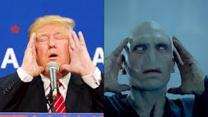

.png)
Trump Meets Voldemort

Trump has always been compared to the fictional character Voldemort. Everyone has decided that Trump's evilness is comparable to the Dark Lord's. But what will happen when they actually meet... Will they become friends or foes? Will they make avada kedevra or America great again? Or will they make a truce and march to the Illuminerty, and help them with destroying the universe? Many, many questions have been asked, but now the event we have all been dreading has come... A journalist for the Boss Blog, Hairy P., was eyewitness to the event and barely escaped alive, with no sanity left in him. The Boss Blog had to proceed by extracting his memory. We decided that this had to be written on our blog... The world must know the danger we face. As the eighth book of Harry Potter came out, the actor playing Voldemort was possesed by the soul of the actual Voldemort... and became...

That. He escaped from the stage, murdering half the audience on the way. Bursting through the roof, he apparated to America... where he put the Imperius Curse on Trump. He cloned then cloned Trump, and now he has three extremely powerful weapons... If Trump became president, he would have the entire U.S. to do his bidding, if he doesn't already kill them all... but most importantly, he has the DARK TRUMPS.


Together, they will take a Portkey to the headquarters of the Illuminerty, anchored at the edge of a wormhole. There they will blackmail the Illuminerty by saying they will use the wrath of Beyonce on them. So the Illuminerty have no choice but to resign to Voldemort. But little did any of them know... that Voldemort made a mistake during the cloning of Trump. Have you ever wondered where Voldemort's nose was? Well, the asnwer is it escaped from the books before his body did, and took it's mortal form as or reporter,